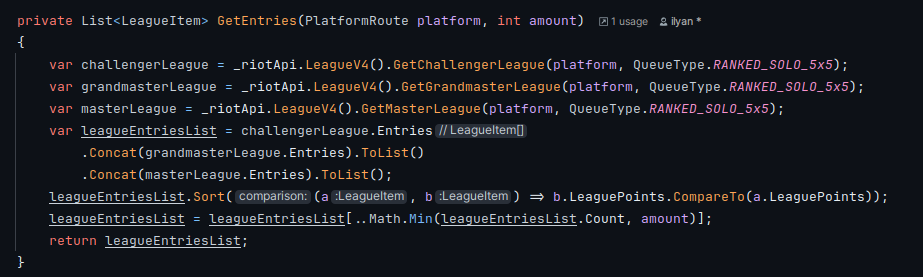
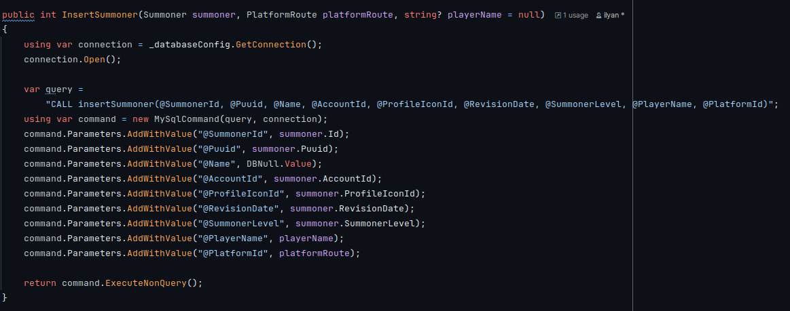
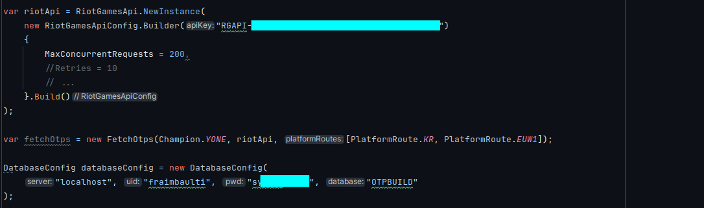

Qu'est-ce que OTPBuild ?
OTPBuild est une application non visuelle qui permet aux joueurs du jeu League of Legends de récupérer des informations sur les meilleurs joueurs du jeu pour s'en inspirer. L'application utilise l'API de Riot Games pour récupérer les données des joueurs, les stocke dans une base de données MySQL. Les joueurs peuvent ainsi consulter les statistiques des meilleurs joueurs du jeu, et s'en inspirer pour améliorer leur propre jeu. Cette application est développé en C#.
Les apprentisssages critiques
AC23.01 | Concevoir et développer des applications communicantes
Niveau de maîtrise : acquisJ'ai développé une application qui communique avec l'API de Riot Games pour récupérer les données des joueurs. J'ai appris à utiliser les requêtes HTTP pour envoyer des demandes à l'API, et à traiter les réponses pour extraire les données des joueurs.
AC23.02 | Utiliser des serveurs et des services réseaux virtualisés
Niveau de maîtrise : acquisJ'ai utilisé un serveur MySQL pour stocker les données des joueurs. J'ai appris à créer des tables pour stocker les données, et à écrire des requêtes SQL pour insérer, mettre à jour, et récupérer les données.
AC23.03 | Sécuriser les services et données d’un système
Niveau de maîtrise : acquisJ'ai sécurisé l'application en utilisant des clés d'API pour accéder à l'API de Riot Games. J'ai également sécurisé la base de données en utilisant des mots de passe forts et en limitant les accès aux utilisateurs autorisés.
